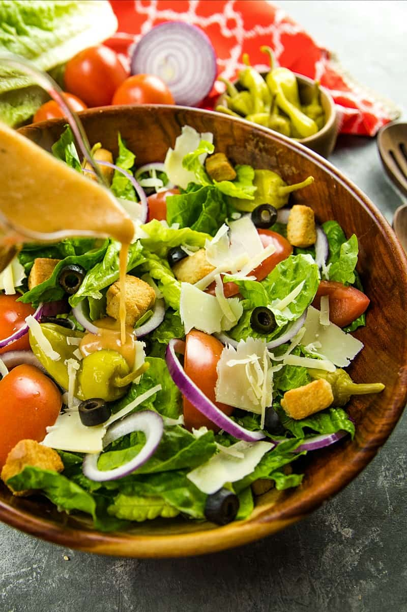

Copycat Olive Garden Salad

Description
A replica of the famous restaurant's signature dish! Fresh, crisp romaine
lettuce forms the base of this refreshing salad, combined with juicy
cherry tomatoes, sliced black olives, and tangy pepperoncini for a burst
of flavor. Tantalizing red onions and crunchy cucumbers add depth to the
medley of tastes, while grated Parmesan cheese provides a delightful
richness.
Drizzled generously with Olive Garden's renowned Italian dressing, this
salad comes to life with the perfect balance of herbs and spices. The
dressing perfectly complements the ingredients, tying the flavors together
in harmony. A hint of garlic croutons sprinkled on top adds a satisfying
crunch, elevating this salad to a whole new level of satisfaction.
Savor the taste of Italy right in your own home with this mouthwatering
"Copycat Olive Garden Salad" - an exceptional blend of freshness and
authenticity that will leave you feeling utterly satisfied. Buon Appetito!
Ingredients
Dressing:
- 1/4 cup extra-virgin olive oil
- 3 tablespoons mayonnaise
- 1 tablespoon white wine vinegar
- 1 tablespoon fresh lemon juice
- 1 1/2 teaspoons white sugar
- 1 teaspoon kosher salt
- 3/4 teaspoon freshly ground black pepper
- 1/2 teaspoon Italian seasoning
- 1 garlic clove, crushed
- 1/4 cup freshly grated Parmesan cheese
Salad:
- 2 (5 ounce) packages American salad mix
- 3/4 cup pitted black olives
- 3/4 cup pickled pepperoncini
- 1/2 cup thinly sliced red onion
- 2 plum tomatoes, sliced
- 1 (4 1/2 ounce) package large seasoned croutons
Steps
-
Combine olive oil, mayonnaise, vinegar, lemon juice, sugar, salt,
pepper, Italian seasoning, garlic, and Parmesan in a food processor, and
process until thoroughly combined.
-
Combine salad mix, olives, pepperoncini, onion, tomatoes, and croutons
in a large bowl. Drizzle salad with dressing; toss to coat. Let stand
for 5 minutes before serving.
Back to Main Page